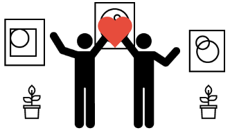

É fácil e rápido!
Para procurar pessoas dispostas a ajudar, você pode encontrar doadores disponiveis próximos a você clicando aqui!
Depois disso, basta criar uma conta e contactar o voluntário da doação, marcar um lugar, e retirar o que precisa.
Ou, você pode clicar aqui para publicar suas necessidades em um anúncio em nosso site e esperar que algum voluntário te contacte e ofereça a doação de que precisa.
Para fazer uma doação, você pode montar a sua box, anunciá-la, e esperar que algum interessado te contacte
Ou você pode procurar pessoas/causas que precisam da sua ajuda clicando aqui!
Veja o nosso tutorial!
Quem somos nós?
Nós somos uma instituição sem fins lucrativos com a intenção aqueles que necessitam, de um modo funcional e gratuito baseado apenas na interação entre doadores e aqueles que a recebem, onde ambas as partes podem se beneficiar! Quem faz a doação, alem de ajudar ao próximo de maneira rápida e gratuita, pode se livrar de algo que estava guardando há muito tempo sem propósito. Não perca tempo e anuncie agora mesmo a sua doação ou necessidade.